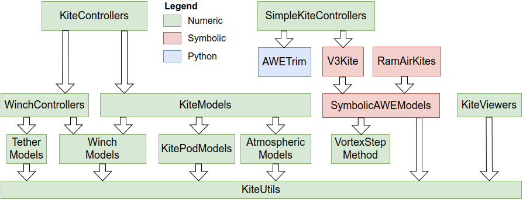

SimpleKiteControllers
This package is part of Julia Kite Power Tools, which consists of the following packages:

SimpleKiteControllers also depends on WinchControllers and AtmosphericModels.
Introduction
This package provides:
- a path following figure of eight controller
- a reel-out controller that produces power by reeling out and flying figures of eight
- a client for the AWETrim reelout flight-path optimizer
Planned:
- a controller for flying circles
This package provides
- the figure-of-eight path-following guidance: the types
FigureEightControllerandFigureEightSettingsand the functionsfigure_eight_path,calc_attractor,navigate_fig8,set_path_center!,path_tangent - the figure-of-eight inner loop: the types
CourseControllerandCourseControllerSettings, driven bycalc_steeringandset_phase!— the heading/course PID, entry state machine andrel_depower, shared by all threeexamples/simple_fig8*.jlscripts - the curvature feasibility check
check_pattern_feasible(withmin_turn_radius,path_min_radius,path_radius_profile) — a pattern tighter than the kite's minimum turn radius cannot be tracked at any PID tuning, so this is worth running before a simulation, not after turn_rate_coeffs, the identified turn-rate-law coefficientsc1,c2and steeringdelaythe feasibility check needs, interpolated in depower fromdata/turn_rate_coeffs.yamlfig8_metrics/print_fig8_metrics, headless quality metrics for a flown runFC_Settings, every tuning parameter of a figure-of-eight run, loaded fromdata/fc_settings.yaml
The examples are described on four pages: general, identification, figure-of-eight and reel-out; and the docstrings of all exported types and functions are on the API page. The YAML files that make up a run, and how a system project ties them together, are explained on the Settings page.
Further documentation
- simulation results and video in notebook format
- docs/control_algorithm.md — how the controller works, from the optimal trajectory through path following and the steering set point to the reel-out speed, plus what is and is not verified by the test suite
- docs/thesis.md — the heading/course fusion ψ' in detail, and how it differs from the reference formulation
- docs/reeloutstatemachine.md — the flight phases and winch states of
examples/simple_reelout.jl, with the transition conditions - docs/fig8tuninglog.md — the dated record of the parameter experiments behind the shipped tuning, including which levers turned out to be dead ends
- docs/ScratchUsage.md — startup cost and where the generated model and settling caches land
- docs/TrajectoryOptimization.md — notes on the trajectory optimization test cases
License
This project is licensed under the MIT License. Please see the below Copyright notice in association with the license that can be found in the file LICENSE.
Copyright notice
Technische Universiteit Delft hereby disclaims all copyright interest in the package “SimpleKiteControllers.jl” (controllers for airborne wind energy systems) written by the Author(s).
Prof.dr. H.G.C. (Henri) Werij, Dean of Aerospace Engineering, Technische Universiteit Delft.
See the copyright notices in the source files.
Acknowledgements
This work has been supported by the MERIDIONAL project, which receives funding from the European Union’s Horizon Europe Program under the grant agreement no. 101084216. The opinions expressed in this document reflect only the author’s view and reflects in no way the European Commission’s opinions. The European Commission is not responsible for any use that may be made of the information it contains.
Related
- A fully working set of flight path controllers and planners can be found here: KiteControllers.jl
- The reel-out flight-path optimizer used by
simple_opt_fig8.jlandsimple_opt_reelout.jl: AWETrim